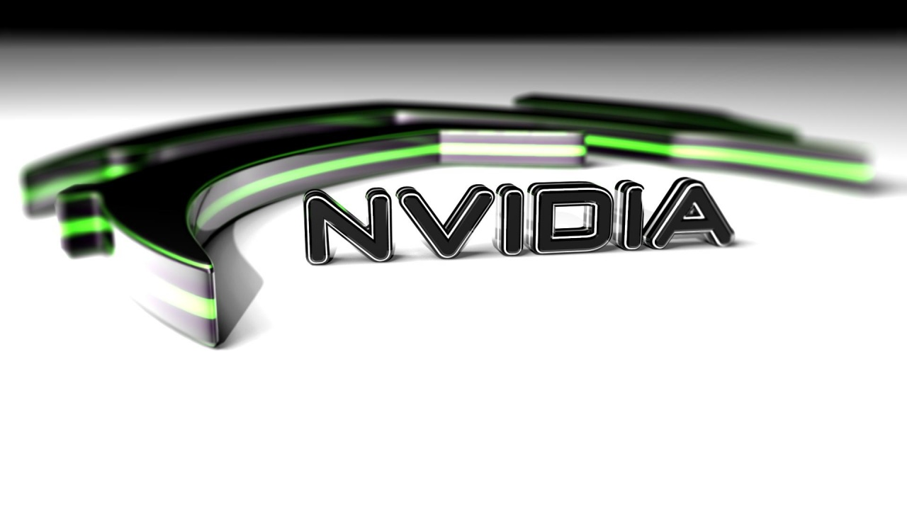

Miners Causing Power Outages
- 
According to El Chapuzas Informatico, an investigation by Iranian authorities has revealed that recent power outages in Iran have been caused by the growing popularity of mining farms in the country.
Chinese companies are reportedly moving their mining operations to Iran, where the electricity cost is 4 times lower than in mainland China (1.8 to 2.2 cents per kilowatt-hour). The country is now allegedly hosting 14 large mining farms that consume around 300 megawatts of power. This is comparable to the power consumption of a city with 100K inhabitants. According to research by the University of Cambridge, Iran is among the six popular destinations for mining farms in the world
We receive photos with mining farms almost on a daily basis. Various companies specializing in selling mining equipment are eager to share their new batches of GeForce RTX 30 graphics cards when are then sold directly to miners. The source of these graphics cards is unknown, but it appears that neither board partners nor NVIDIA have any problem selling those cards to miners. So far we have not heard about any retail store or board partner being punished for taking part in this process.
The GPU mining craze has even affected the recently launched notebooks featuring new graphics cards from NVIDIA. Chinese miners are now reportedly buying laptops equipped with RTX 30 Laptop GPUs. No GPU is safe anymore.
Source